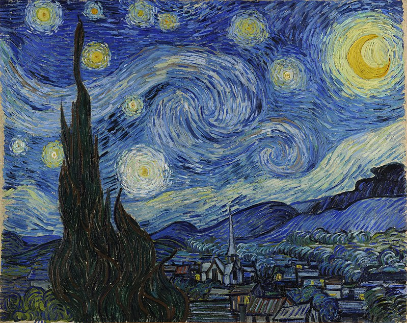

Vincent Van Gogh
Творчество и жизнеописание
Картина"Звездная ночь. 1889"

нидерл. De sterrennacht
Холст, масло. 73,7 × 92,1 см
Музей современного искусства, Нью-Йорк
Искусствовед Мейер Шапиро подчёркивает экспрессионистские аспекты «Звёздной ночи» и считает, что эта «визионерская картина вдохновлена религиозным настроением и написана под напором чувств», а её скрытое содержание связано с новозаветным Откровением Иоанна Богослова. Искусствовед Свен Лёфгрен развивает эти идеи, отмечая галлюцинаторный характер картины и сравнивая религиозное стремление Ван Гога за пределы бытия с поэзией Уолта Уитмена. Он называет «Звёздную ночь» бесконечно выразительной, символизирующей окончательное поглощение художника космосом и дающей незабываемое ощущение пребывания на пороге вечности. Лёфгрен продвигает собственную символистскую теорию, ссылаясь на одиннадцать звёзд во сне Иосифа из книги Бытия, и утверждает, что элементы «Звёздной ночи» носят исключительно символический характер, как, например, кипарис, являющийся символом смерти в средиземноморских странах. Искусствовед Лорен Сот находит свой символический подтекст в «Звёздной ночи». Упоминая восхищение Ван Гога живописью Эжена Делакруа, который в ранний период использовал синие и жёлтые цвета в изображении Христа, Сот предполагает, что Ван Гог сам изобразил на картине Спасителя. Сот критикует библейские интерпретации Шапиро и Лёфгрена, например в том, что полумесяц на картине включает элементы солнца, и считает, что он имеет символическое значение для Ван Гога как «утешение».
Искусствовед Элберт Боайм помимо Венеры обнаруживает на картине созвездие Овна, а также предполагает, что изначально Ван Гог намеревался изобразить растущую выпуклую Луну, но потом вернулся к традиционному полумесяцу, ореол вокруг которого является остатком первоначальной версии. По мнению Боайма Ван Гог мог быть знаком с популярными иллюстрированными публикациями Фламмариона с рисунками спиральных туманностей, как тогда называли спиральные галактики. Боайм интерпретирует закрученную фигуру в центре как спиральную галактику либо как комету, утверждая, что единственными нереалистичными элементами на картине являются деревня и прочие завихрения в небе, которые могут выражать ощущение Ван Гогом живого динамичного космоса.
ссылка на полную статью